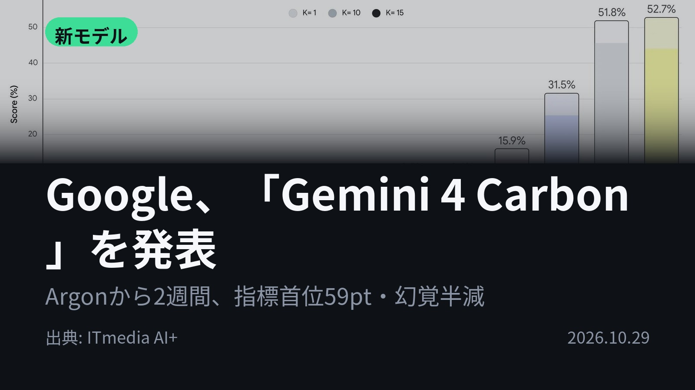
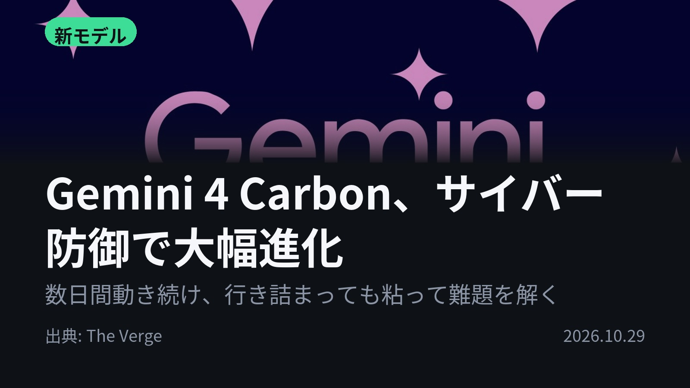
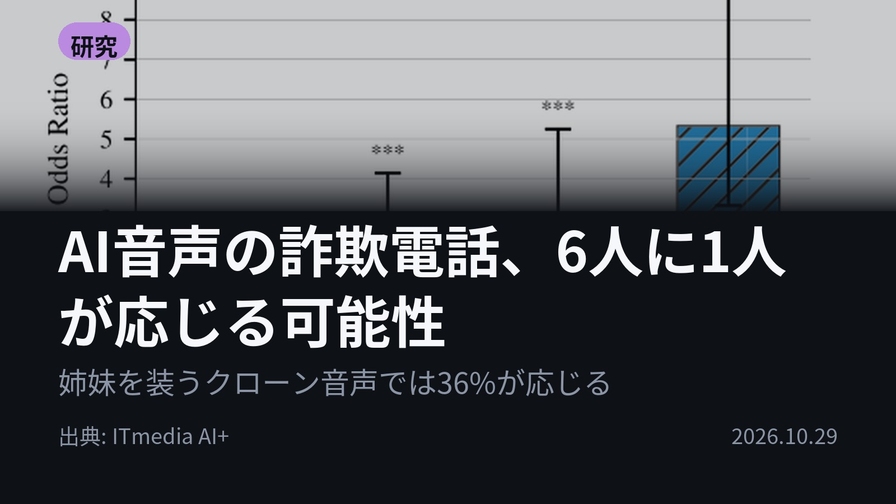
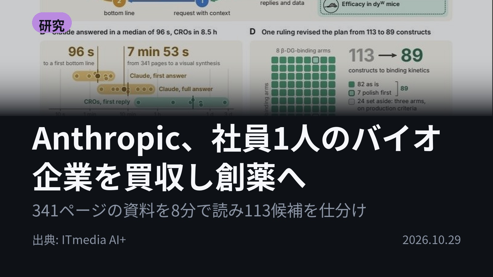
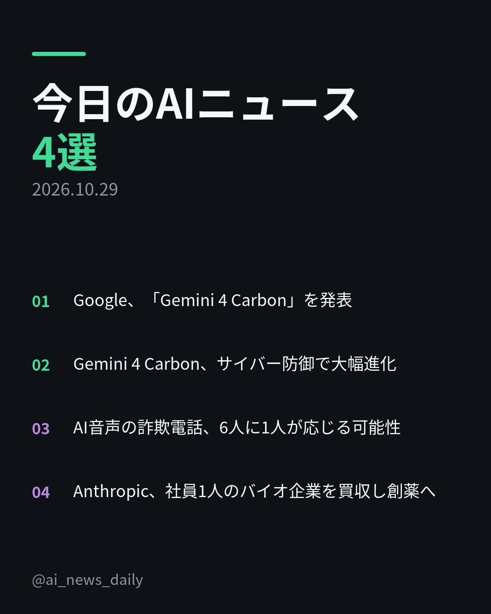
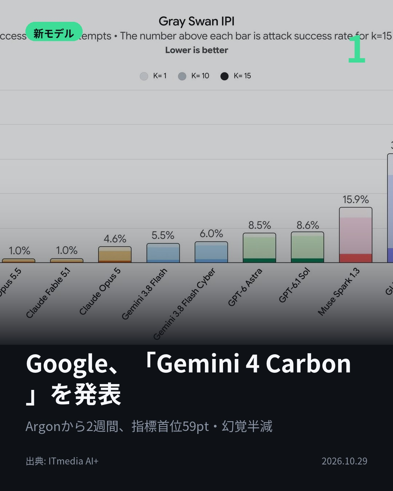
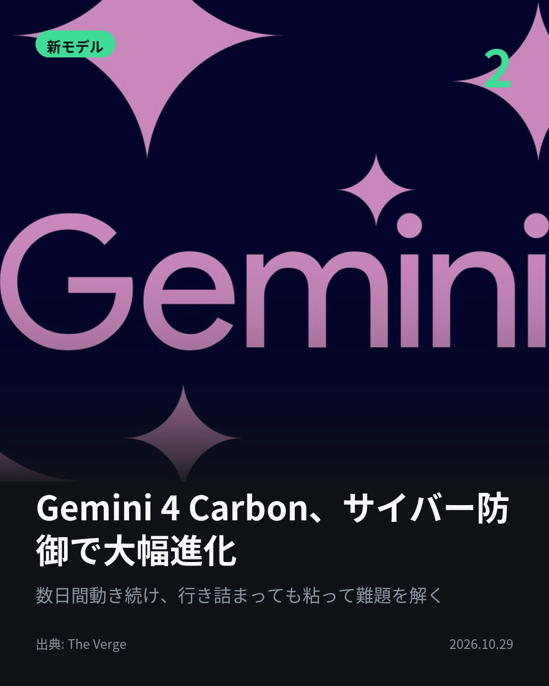
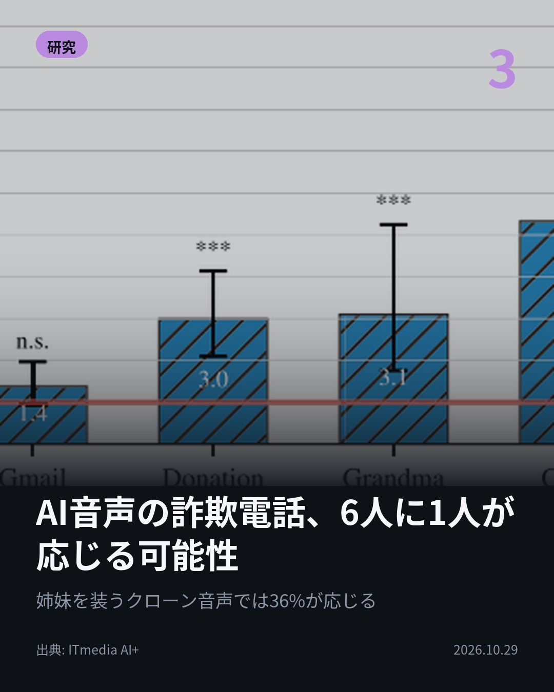
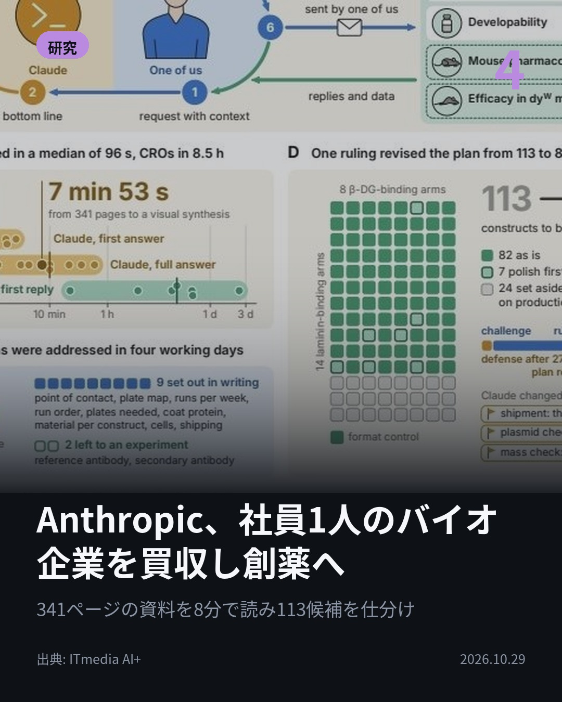

今日のAIニュース 下書き
2026-10-29 生成 10/29 08:44
⚠ ファクト照合で要確認の項目があります。
各ニュースの警告を確認してから投稿してください。
X（4投稿）
Google、「Gemini 4 Carbon」を発表
原題: Google、「Gemini 4 Carbon」発表 「Argon」公開から2週間、サイバー防御能力などを強化

Argon公開から2週間で、指標が50→59ptに。 Googleが「Gemini 4 Carbon」を発表し、AI性能指標で首位に立った。幻覚はArgonの約半分。まずはサイバー防御組織に限って提供する。 #AI #Gemini（出典: ITmedia AI+）
重み 198 / 280（見た目 130字）

Gemini 4 Carbon、サイバー防御で大幅進化
原題: Google launches Gemini 4 Carbon with a ‘significant leap’ in cybersecurity

Google社内で、AIが数日間動き続け、行き詰まりを粘り抜いた。 Gemini 4 Carbonは、実在バグの発見力を測るSEC-bench Proと、脆弱性を攻撃コードにする力を測るExploitGymで首位。 #AI #Gemini（出典: The Verge）
重み 198 / 280（見た目 132字）
要確認:
［固有名詞］サイバー — この語が本文に見つかりません
［固有名詞］Verge — この語が本文に見つかりません

AI音声の詐欺電話、6人に1人が応じる可能性
原題: AI音声の詐欺電話、6人に1人が応じる可能性 だまされやすい手口とは 米ハーバード大やMetaが4100人で検証

AI音声の詐欺電話、だまされる決め手は？ ハーバード大やMetaが米国成人4100人で検証。「応じる」「分からない」は平均16.5％。決め手は声のリアルさより話の説得力。姉妹を装うクローン音声では36.1％。 #AI #音声AI（出典: ITmedia AI+）
重み 222 / 280（見た目 129字）

Anthropic、社員1人のバイオ企業を買収し創薬へ
原題: Anthropic、独自の“創薬活動”に着手 社員1人のバイオ企業を買収、小児難病の治療薬研究を進める

Anthropicが、自ら創薬に乗り出した。 社員1人のバイオ企業Mithrilを買収。創業者はClaudeで11の研究機関との段取りを回し、小児の筋ジストロフィー研究で、試作抗体を投与したマウスの握力などが約2倍に。 #AI #Claude（出典: ITmedia AI+）
重み 224 / 280（見た目 136字）

Instagram（カルーセル 6枚）


1. 表紙


2. ニュース


3. ニュース


4. ニュース


5. ニュース

6. CTA
Googleの新モデルは、前モデルの公開からわずか2週間で性能指標の首位に。 一方で、AI音声の詐欺電話には6人に1人が応じる可能性があるという研究も出ました。 1. ① Gemini 4 Carbon 安全面も改善し、ハルシネーション（根拠のない主張）はArgonの約半分に。Webページに仕込まれた指示でAIを操る攻撃の成功率は0.7％→0.0％。API導入価格は100万トークン当たり入力2ドル・出力10ドル。(ITmedia AI+) 2. ② Carbonのサイバー防御能力 Artificial Analysis Intelligence Index（v5.0）でClaude Opus 5.5やGPT-6 Astraを上回った。実在バグの発見力を測るSEC-bench Pro、脆弱性を攻撃コードに変える力を測るExploitGymでも首位。(The Verge) 3. ③ AI音声の詐欺電話 本物の人間の声を聞いた人の約67％がAIだと誤判定。生成AIをよく使う人でも見抜く精度は変わらなかった。人を雇うと1時間約27ドルの赤字になる詐欺電話が、AIなら1〜3ドルの黒字という試算も。(ITmedia AI+) 4. ④ Anthropicの創薬 113種類の候補抗体を、Claudeが341ページの製造データから8分足らずで3つに仕分けた。一方で、抗体の量を少なく書いた依頼など少なくとも3件のミスが人の確認をすり抜けた。早ければ2028年後半に人での臨床試験を見込む。(ITmedia AI+) 数日がかりの開発作業、創薬の段取り、詐欺電話まで。AIが人の仕事を丸ごと担う場面が並んだ1日でした。 毎朝4本、AIニュースの要点をまとめています。見返したい人は保存、毎日追いたい人はフォローを。 #AI #生成AI #人工知能 #テクノロジー #AIニュース #Claude #Gemini #Google #Anthropic #Gemini4Carbon #サイバーセキュリティ #詐欺対策 #ボイスクローン #音声AI #創薬 #バイオテック #AI活用 #最新技術 #artificialintelligence #generativeAI #technews #cybersecurity
965字（Instagram上限 2,200字）
この日の選定理由
Google、「Gemini 4 Carbon」を発表
前モデルの公開からわずか2週間で、首位を取るモデルが出ました。サイバー悪用のリスクを踏まえ、まず防御組織に限って提供する段階的な公開方法も、今後のフロンティアモデルの出し方の手本になりそうです。
Gemini 4 Carbon、サイバー防御で大幅進化
Claude Opus 5.5やGPT-6 Astraを指標で上回り、脆弱性の発見や攻撃コード化を測るベンチマークでも首位です。AIがセキュリティの攻防の主役になりつつあることを示しています。
AI音声の詐欺電話、6人に1人が応じる可能性
人がだまされる要因は、声のリアルさよりも話の説得力でした。人間を雇うと赤字の詐欺電話が、AIなら黒字になるという試算は、詐欺の大量化が現実的であることを示しています。
Anthropic、社員1人のバイオ企業を買収し創薬へ
1人の創業者がClaudeを使い、11の研究機関との共同研究をまとめてマウス試験で成果を出しました。一方で、人の確認をすり抜けたAIのミスも記録されており、AIで研究がどこまで変わるかを具体的に示しています。